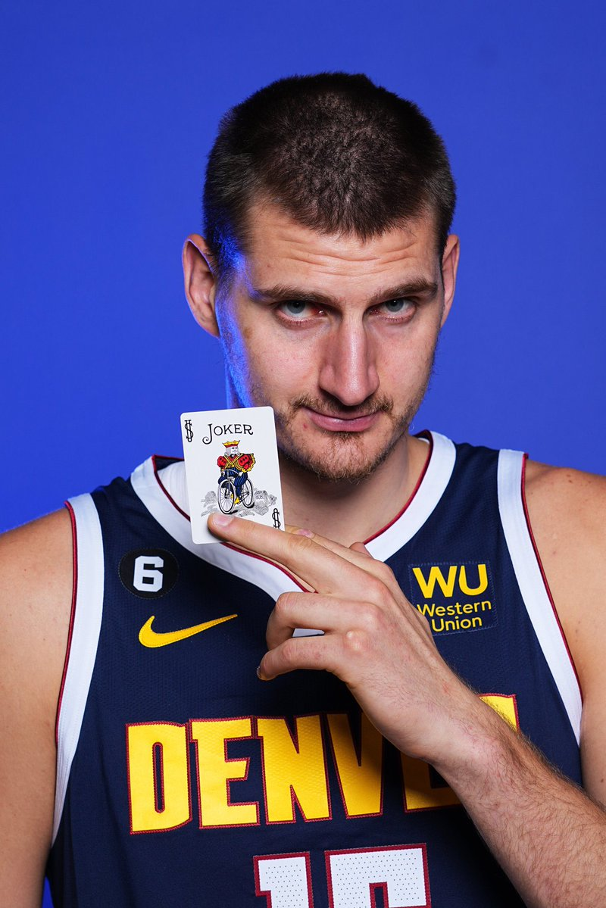

Никола Јокић, рођен 19. фебруара 1995. године у Сомбору, српски је кошаркаш који игра на позицији центра са својих 2,11 метара и 129 килограма, а тренутно наступа за Денвер Нагетсе у НБА лиги. Никола је први је Србин икада који је проглашен за најкориснијег играча НБА лиге. Награду за најбољег кошаркаша најјаче лиге на свету је освојио два пута и то редом у сезонама 2020./21. и 2021./22. и као такав остаће заувек уписан златним словима у српску кошаркашку историју, раме уз раме са осталим великанима српске и југословенске кошарке.
Од малих ногу Никола je био посвећен кошарци у чему су га, уосталом као и дан данас поред мајке и оца подржавала и његова старија браћа Немања и Страхиња који су се такође бавили кошарком у том периоду. Свакодневно су ишли на градске терене да играју кошарку, што се данас може и приметити у његовој игри, јер поседује велики број баскеташких фора у свом кошаркашком арсеналу. Као веома интелигентан али и не веома спретан што се физичких способности тиче, јер је познато да се и у школи "мучио" са физичким васпитањем и гимнастиком, уписао се у градски кошаркашки клуб где је и почела његова кошаркашка каријера. Међутим, поред велике љубави према кошарци, он гаји још већу љубав према коњима, те му је дечачки сан и био да једног дана постане џокеј, али као што видимо његова каријера је отишла тотало другом путањом, а поред кошарке и љубави према коњима која се данас све више и више увећава, у младости је тренирао џудо и карате.
 Назад на врх
Назад на врх
Николу је од млађих дана красила велика интeлигенција и сналажљивост али никада није важио за великог атлету, још од првих дана своје каријере није био најбржи или најјачи и одувек је био "пунији" од својих саиграча, а по речима његовог некадашњег тренера Дејана Милојевића није могао да уради ни 5 склекова. Јокић је у млађим категоријама наступао у дресу Војводине Србијагас где је заблистао у ХЕБА Јуниорској лиги Србије. На десет мечева у дресу новосадских црвено-белих бележио је 25.6 поена и 11.9 скокова, уз просечни коефицијент успешности 32.9, те је услед сјајних бројки уследио позив тадашње Мега Визуре.
Професионалну каријеру је почео управо у дресу Мега Визуре у којој је боравио две сезоне и где се показао као прави дијамант српске кошарке који је само требао да се "избруси". Услед одличних партија у "АБА" лиги, Никола је 2014. године изашао на НБА драфт где је одабран са 41. позиције од екипе из Колорада, Денвер Нагетсa, чије боје брани и дан данас. Јокић је већ непуних 10 година у најјачој лиги света и из сезоне у сезону је све бољи и доминантнији, статистика је из сезоне у сезону све боља и већа, а успеси и признања се само нижу. Конкретно, главни играч Денвер Нагетса ове сезоне малтене бележи такозвани "триплдабл" са 24.5 поена, 11.8 скокова и 9.8 асистенција по мечу.
Никола поседује један од најзанимљивијих и најукатнијих надимака у НБА лиги, па можда и икада. Наиме Никола има надимак "џокер" који је добио од свог некадашњег саиграча Мајка Милера још у својим првим данима у НБА лиги јер Мајк није могао да изговри Николино име, па га је назвао џокером јер му је тако било једноставније. Популарни "џокер" и Мајк су били нераздвојни, у осталом као и дан данас колико им то време дозвољава.
Никола је и сам неколко пута изјавио да му се његов надимак допада, и да је захвалан Мајку Милер што му га је дао, а овај надимак данас представља један од заштитних знакова двоструког МВП-ија НБА лиге.
 Назад на врх